UnlimitedFTP Documentation
1 Overview
2 Installation
3 Using UnlimitedFTP
3.1 Minimum system requirements
3.2 User Interface
3.3 Connecting to an FTP server
3.4 Directory browsing
3.5 Selecting files and directories
3.6 Deleting files and directories
3.7 Renaming files and directories
3.8 Transferring files and directories
3.9 Creating a directory
3.10 Setting transfer mode
3.11 Popup menu
4 Configuring UnlimitedFTP
4.1 Connection parameters
4.2 Secure FTP settings
4.3 Proxy parameters
4.4 Functionality related parameters
4.5 Color settings
4.6 Interface and layout Settings
4.7 Connect dialog parameters
4.8 Error URL parameters
4.9 Language settings and localization
5 Advanced Features
5.1 Disabling the "unlicensed" banner
5.2 Hiding Connect, Disconnect, Help and About buttons
5.3 Disabling individual buttons
5.4 Customizing the help location
5.5 Customizable right click options
5.6 Advanced file filtering
5.7 Resuming broken or interrupted transfers
5.8 Secure FTP using FTPS
5.9 Secure FTP using SFTP
5.10 Secure FTP using UnlimitedFTP Servlet
6 Support
7 Version History
1 Overview
1.1 Introduction
UnlimitedFTP was the world's first commercial Java FTP client applet. First released in 2000, UnlimitedFTP is the culmination of years of working with our customers to implement the features they need. This has resulted in more than 100 customizable parameters, making our FTP applet the most robust, configurable, and user friendly FTP applet on the market. Years of testing and development also ensure support on the widest range of platforms of any competing products.
The range of UnlimitedFTP products are easily embedded into your HTML with 1 simple line, and are configured using javascript that can be easily understood and modified by non-programmers using the text editor of your choice. See Section 2.2 for details.
If you require further assistance with setup, or are interested in related products and customization services, please visit our website. Please also review the Readme and License files.
1.2 Features
The following is a list of the main features of UnlimitedFTP.
- Runs from any web page using Netscape, Internet Explorer, Opera, Mozilla, or Safari browsers with Java 1.1 or higher enabled.
- Operating System-independent: runs on any platform with a Java 1.4 or higher VM
- Connection to any FTP site.
- Local and Remote Directory browsing through a graphical interface.
- The ability to transfer multiple files and/or directories and directory tree structures.
- Cross platform data transfers (ex. UNIX, Windows, Mac, MVS, HPUX) with automatic conversion.
- Smart file viewing in Windows. Files with certain file extensions automatically open in the default application.
- File transfers through firewalls using UnlimitedFTP Servlet.
- UnlimitedFTP will work with any FTP proxy using the 'username@hostname.com' syntax.
- CHMOD when connected to Unix servers
- The ability to delete non-empty folders on FTP sites
- Automatic file type detection for ASCII or BIN transfer mode.
- File filtering allows you to configure UnlimitedFTP to view and transfer only files with specific extensions or file name.
- Ability to limit browsing to initial directory and its sub-directories.
- Incremental transfers
- Directory synchronization (with customizable file priority)
- Resume broken transfers automatically
- Recover from several types of transfer errors, with ability to specify number of retries.
- Auto-upload/Auto-download capabilities.
- Progress dialog with transfer speed and cancel button.
- Configurable display options.
- Customizable right click file options
- Optional file transfer via a secure HTTPS tunnel, using UnlimitedFTP Servlet (Pro and Secure)
- Ability to log in with a private key file (UnlimitedFTP Secure only)
1.3 Known issues
- Scrolling file list in Mac OS 9 doesn't repaint the list until scrolling is stopped.
- Drag and drop on Mac OSX Jaguar and Panther not functional.
1.4 Differences between Pro, Secure, Lite versions
UnlimitedFTP Pro is our most popular web-based FTP product. It contains over a hundred customizable parameters to help you deliver a customized and automated FTP experience to your end users, right from the web. However, there are two other versions available:
- UnlimitedFTP Secure - Contains all the functionality of UnlimitedFTP Pro, while adding support for FTPS (implicit or explicity) and SFTP
- UnlimitedFTP Lite - The feature set is dramatically reduced in order to provide an applet that fits every budget. Automation, security, and proxy settings are not present, but your users will still have the experience of a standard two-way FTP applet, without the need to install or configure any software on their machines.
In the parameter charts (Section 4 of this document), each variable will indicate its availability in the different versions.
2 Installation
2.1 Deploying to a web server
- Extract the contents of unlimitedftp.zip to your local hard disk using a zip utility
- Create a directory on your web server. For example /uftp.
- Upload all files extracted in Step 1 to the directory you created on the web server in Step 2. Important: When uploading files make sure that you upload files in binary mode.
- Go to test page located at the URL http://yourserver.com/uftp/index.html, where yourserver.com is replaced by your domain name. Example: http://www.utechsoft.com.com/unlimitedftp/index.html
- To customize the functionality of UnlimitedFTP, edit the file uftpscript.js with a text editor such as Notepad. Each of the customizable parameters is defined below in Section 4 The filename may differ depending on the applet, but it always ends in ".js".
- Upload the new uftpscript.js to your web server.
2.2 Embedding the applet into your page
Embedding the applet into your webpage is simple. In an appropriate spot of your HTML, add the following line:
<script language="javascript" src="uftpscript.js"></script>
In the above example, uftpscript.js must be in the same directory as your page. You may instead set the "src" parameter to indicate a path to the script.
To customize UnlimitedFTP, you will typically edit "uftpscript.js" with an HTML/text editor and set your variables appropriately. Most variables are fairly self-explanatory in plain English, but this document provides full descriptions of each. The tables beginning in Section 4.1 serve as a guide to customizing UnlimitedFTP's parameters.
2.3 Using dynamic languages
Editing the standalone JavaScript (.js) file is the most common way to configure the applet. However, Advanced web developers may also choose to set variables using dynamic languages such as PHP or additional JavaScript. For example, your web application may perform some work that ultimately results in a variable being set which contains the username. Let's use PHP for our example:
1. My web application ultimately results in a variable, stored as a PHP variable called “username”. The applet doesn't understand this until we declare it as a JavaScript variable that our applet understands (var user):
<script type="text/javascript">
var user = "<?php echo $username ?>";
</script>
2. Since we are declaring "var user" in the page that loads the applet, we need to delete that variable declaration from the .js file. Otherwise it will be re-declared as a blank string! Instead of deleting altogether, you can just comment it out with two slashes at the beginning of the line. Inside the .js file (uftpscript.js, uftplite.js, or uftpsecure.js) the line should look like:
// var user = "";
3. Now we can go back to the page loading the applet and use our standard embedding script tags:
<script type="text/javascript" src="scriptname.js"></script>
(where “scriptname.js” is actually uftpscript.js, uftplite.js, or uftpsecure.js depending on which version you are using)
--
Optionally, you can actually copy the entire JavaScript file directly into your PHP (or ASP, JSP, HTML, etc) page in-between script tags. We have included PHP and Javascript examples of a login scenario in the zip file that uses this approach. Variables are not set with the ".js" file; the pages themselves contain the script variables. Server, port, username, password, and (for Pro and Secure) encryption are set by the "login example" pages, which also ask the user to submit username/password. Other static variables such as appearance customization are set in the destination page.
View the source code for the PHP and JavaScript example pages included in the zip archive to learn more.
3 Using UnlimitedFTP
3.1 Minimum System Requirements
The minimum system requirements for using UnlimitedFTP are as follows:
- Operating Systems: Windows 98/2000/XP/ME, Mac OS 8.x, 9.x, 10.x, Linux, Unix
- Browser: Internet Explorer, Netscape Navigator, Opera. Mozilla, Safari, Firefox
- Browser Java VM: Java 1.1 or above enabled for Lite and Pro, Java 1.4 or above for Secure
- FTP server (must be accessible from your machine)
3.2 User Interface
Below is a screen shot of the UnlimitedFTP user interface. Depending on your Operating System and browser, as well as the parameters you have configured, appearance may differ slightly.
| 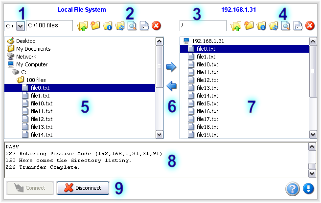 |
- Current local directory - Displays the drive letter and full path of your current local directory.
- Local toolbar - Buttons for performing actions on your local directory.
- Current remote directory - Displays the path of your current remote directory.
- Remote toolbar - Buttons for performing actions on your remote directory.
- Local file listing - Displays files and child folders in your current local directory.
- Transfer buttons - With files selected, click to transfer to or from the remote directory.
- Remote file listing - Displays files and child folders in your current remote directory.
- FTP message display - Displays messages sent to and received from the FTP server.
- Connect/Disconnect - These buttons allow you to connect or disconnect (if autoconnect is not used)
Below is the UnlimitedFTP Lite user interface. Depending on your Operating System and browser, as well as the parameters you have configured, appearance may differ slightly. Note: UnlimitedFTP Pro and Secure will have a similar appearance if the variables “useToolbar” and “useBottomToolbar” are set to false.
| 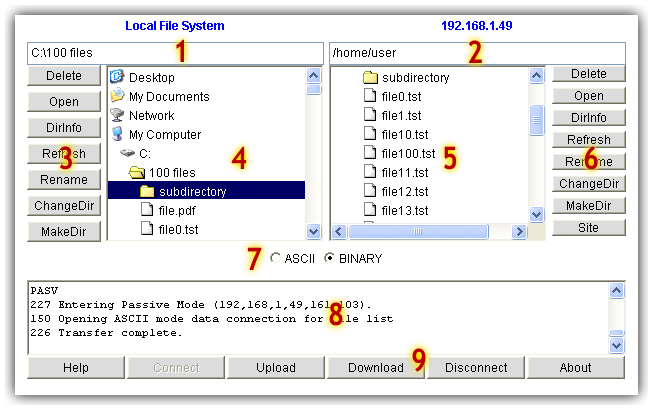 |
- Current local directory - Displays the full path of your current local directory.
- Current remote directory - Displays the path of your current remote directory.
- Local toolbar - Buttons for performing actions on your local directory.
- Local file listing - Displays files and child folders in your current local directory.
- Remote file listing - Displays files and child folders in your current remote directory.
- Remote toolbar - Buttons for performing actions on your remote directory.
- Transfer mode - Switch between ASCII and Binary transfer modes
- FTP message display - Displays messages sent to and received from the FTP server.
- Transfer and connection - These buttons allow you to connect, disconnect, as well as upload and download files.
3.3 Connecting to an FTP server
To load UnlimitedFTP, use your web browser to open the test page you uploaded during installation. See Deploying to a web server. Upon loading UnlimitedFTP a dialog will be presented similar to the one shown below asking you to confirm that you trust the certificate used to sign the applet. The dialog may vary depending on the browser you use. You must accept this dialog for the applet to continue loading. To avoid this dialog from being displayed each time you connect click on the "Always trust content from Unlimi-Tech Software Inc." checkbox in IE, or on the "Always" button if you use Sun's Java Plugin. This dialog ensures that UnlimitedFTP is a trusted application, and you wish to allow it to run with full permissions.
WINDOWS 2000
| 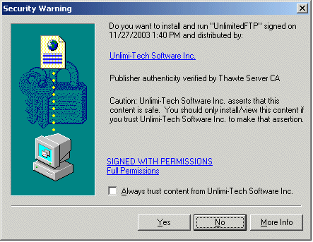 |
| Fig 3.2.1 Internet Explorer with Microsoft VM security warning |
| 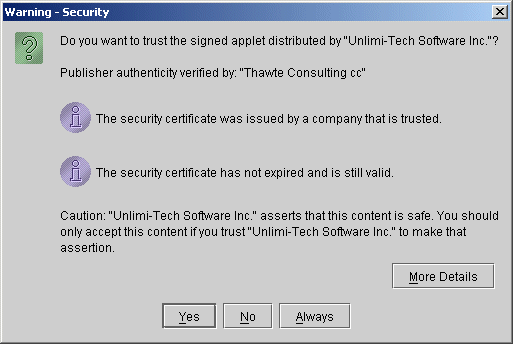 |
| Fig 3.2.2 Sun Java Plugin security warning |
WINDOWS XP
| 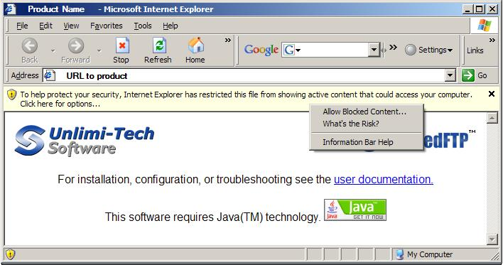 |
| Fig 3.2.3 Internet Explorer with security warning |
| 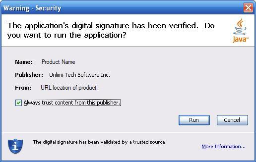 |
| Fig 3.2.4 Sun Java Plugin security warning |
| 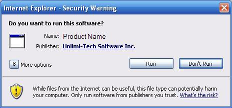 |
| Fig 3.2.5 Microsoft Java Plugin security warning |
MAC OS X
| 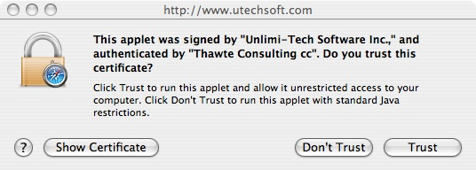 |
| Fig 3.3 Safari Browser with security warning |
Once you have accepted the certificate dialog, UnlimitedFTP will continue loading. Depending on how UnlimitedFTP was configured (See Configuring UnlimitedFTP) it may connect you to your FTP site automatically.
To connect manually, click on the "Connect" button. The following dialog (Fig 3.4) will be displayed prompting you for hostname, port, username and password. If you wish to use an anonymous connection click on the "Anonymous" checkbox to generate an anonymous username and password. If you are behind a firewall or proxy server click the "Passive" checkbox. Click on the "Connect" button to connect to the FTP server.
| 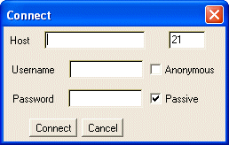 |
| Fig 3.4 Connect dialog (lite and pro versions) |
UnlimitedFTP Secure has an advanced connection dialog. It allows you to manage your connections and control security options.
| 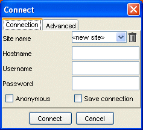 | 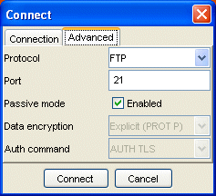 |
| Fig 3.5 UnlimitedFTP Secure Connect dialog | Fig 3.6 UnlimitedFTP Secure Connect dialog (Advanced options) |
Once a connection has been established, the remote directory listing will be loaded with the files and directories from your FTP server.
3.4 Directory browsing
The remote and local file lists display the files and folders in your current working directories. Folders are identified by the folder icon  and files are identified by the file icon . To see the contents of a sub folder, double click on its icon. You may return to a parent folder by clicking on the parent folder icon . The parent folder icon is shown at the top of the remote and local lists at all times for easy access.
and files are identified by the file icon . To see the contents of a sub folder, double click on its icon. You may return to a parent folder by clicking on the parent folder icon . The parent folder icon is shown at the top of the remote and local lists at all times for easy access.
You may browse using the up/down arrow keys on your keyboard. Quickly move to a file beginning with a certain letter by pressing the first letter on your keyboard. Pressing ENTER on a folder will automatically open that folder for browsing. Pressing ENTER with a file selected will initiate an upload or download depending on whether you are browsing the local or remote directory.
UnlimitedFTP provides quick access to the Desktop and My Documents folders for Windows users, or the Home and Finder folders for Mac users.
3.5 Selecting files and directories
To select a file or folder, use your mouse to click on the item in the directory listing. You may select multiple consecutive files by holding down the SHIFT key and selecting the first and last files of the range. Alternatively, you may select multiple separate items by holding the CTRL key and clicking on each item. You may select all files in the current working directory by right-clicking and choosing the "Select All" Option.
3.6 Deleting files and directories
To delete one or more items in a directory, select the items you wish to delete and click on the Delete button or press the DELETE key on your keyboard. You will be asked to confirm this action. Internet Explorer users will see the familiar Recycle Bin dialog when they attempt to delete files from the local file system. These files will be recoverable after they are deleted. If you do not see the Recycle Bin dialog, file deletion will be permanent and unrecoverable. Please take care when deleting files or folders.
| 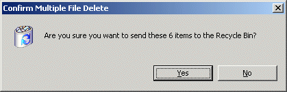 |
| Fig 3.5 Delete dialog |
3.7 Renaming files and directories
To rename a file or directory, select the file you wish to rename and click the Rename button. The rename dialog will appear (Fig 3.6), pre-populated with the current file name. Type the new name and click "Ok" to confirm.
| 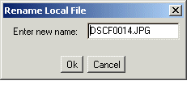 |
| Fig 3.6 Rename dialog |
3.8 Transferring files and directories
To upload or download files and directories, select the items you wish to transfer and check that the proper transfer mode is selected. (See 3.10 Setting transfer mode). To upload selected items from your local directory listing, click on the Upload button. To download selected items from your remote directory listing, click on the Download button.
Once you initiate a file transfer, a progress dialog will appear (Fig 3.7) and display the percentage complete, the current rate of transfer, and the estimated time to completion. To cancel the transfer click the "Cancel" button. Canceling the transfer will not delete any files already transferred, unless you have enabled the "deleteOnCancel" parameter. If you restart the transfer, you will be prompted to resume any files that were not completed in the previous transfer.
| 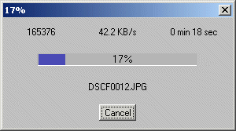 |
| Fig 3.7 Transfer progress dialog |
3.9 Creating a directory
To create a directory, click on the Mkdir button. A dialog will be displayed prompting you for the name of the new directory. Click the "Ok" button to create the directory.
| 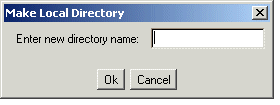 |
| Fig 3.8 Make directory dialog |
3.10 Setting transfer mode
The transfer mode may be controlled using the ASCII and BINARY transfer mode options. See 3.2 User interface. The default transfer mode setting is BINARY. There is no real need to transfer files in ASCII mode unless you are transferring text files from one OS to another and they must remain human-readable. For example, if you wish to upload/download a .txt file that you will view with Notepad, you should transfer in ASCII mode. However, for most purposes, BINARY mode works fine.
Alternatively the file transfer mode may be set by setting the mode parameter . There are three possible transfer mode settings (ASCII, BINARY, and AUTO). (See Functionality related settings )
3.11 Popup menu (pro and secure version only)
UnlimitedFTP provides a convenient way to access various functions that are applicable to the files or folders you have selected. Simply select the files and/or folders you wish to work with, and right-click on them. You will be presented with a popup similar to the one below (Fig 3.9) . The popup will change depending on number and location of files.
| 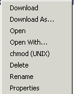 |
| Fig 3.9 Popup menu options |
Some of the options correspond to their Button counterparts. Here is a description of the functions that are only in the right-click popup menu:
- Download/Upload As... options will upload or download the selected file but will save it under the name you specify rather than using the current name of the file. This is useful if you know the filename already exists, and you do not wish to overwrite.
- Open With... is a Windows specific option that will allow you to choose the application with which you would like to Open the selected file.
- Chmod (UNIX)is a Unix specific command, and allows you to set the file permissions on files on your FTP server. This is sometimes required when you upload HTML pages for a website.
- Command Prompt Here will open a Windows Command prompt and automatically place you in the selected directory.
- Windows Explorer Here will open a Windows Explorer window and automatically place you in the selected directory.
- Properties will display the Filename, Size, and Last modified date of the selected file.
- Select All will select all files in the current working directory.
- NOTE: To access the popup on Mac systems with a single button mouse, hold down the CTRL key when the mouse is clicked.
4 Configuring UnlimitedFTP
4.1 Connection parameters
These parameters control how UnlimitedFTP will establish the connection to the FTP server. Please note that some parameters are only available in certain versions. The UnlimitedFTP version that supports the particular parameter is noted under the description of each parameter.
| Connection-related Settings | |
|---|---|
| server | The host name or IP address of the FTP server. Default value: "" Availability (all versions) |
| port | The port number of the FTP server. Typically, FTP uses port 21. Default value: "21" Availability (all versions) |
| user | The username for the FTP server account. Default value: "" Availability (all versions) |
| pass | The password for the FTP server account. Default value: "" Availability (all versions) |
| autoconnect | If this value is set to "true", UnlimitedFTP will automatically connect based on the connection credentials supplied in the above parameters. The default value is "false". Default value: "false" Availability (all versions) |
| autoreconnect | If this value is set to "true", UnlimitedFTP will automatically ask the user if they would like to reconnect after a time-out has occurred, or they have been disconnected for some other reason. If "autoconnect" is set to true, it will log them directly in to the server. If not, the user will be presented with the Connect dialog, pre-populated with the connection info. Default value: "true" Availability (pro, secure) |
| passive | If set to "true", all data connections will be outgoing. UnlimitedFTP works through firewalls when this value is set to "true". If you are using an FTP proxy, set this value to "false". Default value: "true" Availability (all versions) |
| encrypt | If set to "true" you must pass encrypted user/pass/server parameters to UnlimitedFTP, which will decrypt them and perform the login. The encryption is based on a key value that is specified by the "ek" parameter below. To encrypt parameters you can use encrypt.html that was downloaded with UnlimitedFTP. This provides at least some measure of protection from prying eyes, and people who love to snoop through your HTML. Although this seems very un-secure to include the encryption algorithm along with the applet, keep in mind this is only a way to hide login credentials from users who try to view the HTML source of your page. Determined hackers will easily be able to sniff the network to retrieve user and password info regardless of the encryption done in the HTML. Default value: "false" Availability (pro, secure) |
| ek | This parameter works in conjunction with the "encrypt" parameter. This is the key that is used to encode/decode the string value you pass to the user, pass, and server parameters. Here is an example configuration. In this example, the server/user/pass strings are 192.168.1.100/anonymous/uftp@unlimitedftp.com respectively. This illustrates how the parameters will look to anyone who inspects the connection values in your HTML: var server = "8I7BLHN;8I8@5"; Default value: "" Availability (pro, secure) |
| connecttimeout | This value (in milliseconds) specifies how long UnlimitedFTP will try to connect to an FTP server before giving up and timing out. Default value: "20000" Availability (pro, secure) |
| sotimeout | This value (in milliseconds) specifies how long a data connection will wait to read data before giving up and timing out. Default value: "-1" means no timeout Availability (pro, secure) |
| waitRetry | This value (in milliseconds) specifies how long UnlimitedFTP will wait, if a transfer error occurs, before it tries to reconnect and resume the transfer. Default value: "3000" (3 seconds) Availability (pro, secure) |
| maxRetries | This value specifies how many times UnlimitedFTP will try, if a transfer error occurs, to reconnect and resume the transfer. Default value: "1" Availability (pro, secure) |
| bufSizeGet | This value specifies the size of the transfer buffer UnlimitedFTP will use when downloading files. Default value: "256" Availability (pro, secure) |
| bufSizePut | This value specifies the size of the transfer buffer UnlimitedFTP will use when uploading files. Default value: "512" Availability (pro, secure) |
| useSerfo | If set to true, UnlimitedFTP will attempt to open an FTP connection through the Service Forwarding Agent at the URL specified by the "SerfoLocation" parameter below. If set to auto, UnlimitedFTP will first attempt to open a regular FTP connection, and if it fails, it will retry through the Service Forwarding Agent at the URL specified by the "SerfoLocation" parameter below. Default value: "false" Availability (pro, secure) |
| SerfoLocation | The location of the UnlimitedFTP Servlet. Please consult SecureFTPInstall.txt for more information. Default value: "" Availability (pro, secure) |
| enableHTTPResume | When "userSerfo" is set to "true", this value allows you to force uploads to first be saved on the web server before being transferred to the FTP server. This is useful if your FTP server executes scripts or commands that rely on the STOR command. The default functionality, "enableHTTPResume" set to "true", is to stream files directly to your FTP server using a series of APPE commands rather than one STOR command. This may cause your FTP server to execute a script before the file is fully transferred. Default value: "true" Availability (pro, secure) |
4.2 Secure FTP settings (UnlimitedFTP Secure only)
| Secure FTP Settings | |
|---|---|
| protocol |
UnlimitedFTP Secure allows you to choose between four protocols. You can connect via regular FTP, SFTP (SSH2) (explained in Section 5.9), FTPS Implicit, or FTPS Explicit (explained in Section 5.8 ). Default value: "FTP" Availability (secure) |
| ftpstype |
This parameter applies only if the "protocol" parameter is set to "FTPS". The FTPS protocol has a couple of variations. the first is called Implicit and generally runs on port 990, and the second is Explicit which generally runs on port 21. This is explained in more detail in Section 5.8 Default value: "" Availability (secure) |
| securedata |
This parameter applies only if the "protocol" parameter is set to "FTPS". When using an Explicit FTP connection, there are a couple of ways to establish the data connection. Implicit will assume all data connections are to be secured, while Explicit will issue a PROT P command to explicitly tell the FTP server it should secure the Data connection. You can also turn off data connection security by setting this value to "NONE". This is explained in more detail in Section 5.8 Default value: "EXPLICIT" Availability (secure) |
| authCommand |
This parameter applies only if the "protocol" parameter is set to "FTPS". When using an Explicit FTP connection, there are a couple of ways to establish the control connection. You can connect using SSL or TLS. This is explained in more detail in Section 5.8 Default value: "AUTH_TLS" Availability (secure) |
| pkLoc | When the applet is in SFTP mode, this parameter allows you to specify the location of a Private Key file for connecting to SFTP servers that allow Private Key Authentication. Note that the server must already have the public key present in it's authorized_keys file. The parameter may optionally be set via the connection dialog. Since this parameter will use a static value for all users, it is only useful if the private key is located in the same path on each of the end user computers. Default value: "" Availability (secure) |
| pkPass | If you specify a private key using the pkLoc parameter, and it is password protected, this parameter allows you to hard code a password. Default value: "" Availability (secure) |
4.3 Proxy settings (pro and secure version only)
These parameters allow you to configure UnlimitedFTP to connect through a SOCKS4 or FTP proxy server. Please contact your network administrator or ISP to determine if you use a proxy server for FTP.
| Proxy server related settings. (Internet Explorer Only) | |
|---|---|
| autodetectproxy | If this value is set to "true", UnlimitedFTP will automatically attempt to detect Internet Explorer's Proxy setup and use it when connecting to FTP servers. This will detect both SOCKS 4 proxy settings, and FTP proxy settings. Default value: "false" Availability (pro, secure) |
| socksproxy | If this value is set to "true", UnlimitedFTP will use the SOCKS proxy server and port specified by the "socksProxyHost" and "socksProxyPort" parameters. Default value: "false" Availability (pro, secure) |
| socksProxyHost | SOCKS proxy server location. Default value: "" Availability (pro, secure) |
| socksProxyPort | SOCKS proxy server port. Default value: "" Availability (pro, secure) |
| ftpproxy | If this value is set to "true" and socksproxy is set to "false", UnlimitedFTP will use the FTP proxy server and port specified by the "ftpProxyHost" and "ftpProxyPort" parameters. Default value: "false" Availability (pro, secure) |
| ftpProxyHost | FTP proxy server location. Default value: "" Availability (pro, secure) |
| ftpProxyPort | FTP proxy server port. Default value: "" Availability (pro, secure) |
4.4 Functionality related settings
These parameters determine how UnlimitedFTP will behave under certain circumstances after a connection is established. Please read the descriptions carefully before attempting to use these settings.
| Functionality related settings | |
|---|---|
| ascbin | Can be either "asc","bin" or "auto", you can set the default file transfer mode. When this parameter is set to auto, UnlimitedFTP will set the transfer mode automatically by comparing the file extension to the list of file extensions specified in the "asciiextensions" parameter below. Default value: "bin" Availability (all versions) |
| asciiextensions | Transfer all the files with these extensions in Ascii Mode. Used in conjunction with "ascbin" parameter when it is set to "auto". Default value: "" Availability (pro, secure) |
| extensions | Only files with these extensions will be displayed/affected by UnlimitedFTP. Default value: "" Availability (pro, secure) |
| exclude | Allows you to exclude files or directories whose names contain strings specified in this parameter. For example, if you wanted to exclude all files starting with the letters "re", exclude the Program Files directory, and also hide the D:\\ drive this parameter would be set like this: "*re*,Program Files,D:\\". This parameter also allows you to use wildcards to exclude files of a certain pattern. For example, to exclude files that are numbered file1_of_10.txt you could set this parameter to "file*_of_*.txt". See Section 5.6 for more details. Default value: "" Availability (pro, secure) |
| invertExclude | If set to "true", UnlimitedFTP will treat the "exclude" parameter as an "include" parameter. See Section 5.6 for more details. Default value: "false" Availability (pro, secure) |
| lockinitialdir | If set to "true", UnlimitedFTP locks the user to the initial directory, and its sub-directories, preventing the user from navigating up the hierarchy. This only applies to the remote directory. Default value: "false" Availability (pro, secure) |
| localdir | UnlimitedFTP will automatically switch to this local directory when UnlimitedFTP initializes. Example would be "c:\\windows" or "/etc". There are also 3 special starting directories that are platform independent. They are"HOME", "DESKTOP" and "ROOT". Note that for Windows paths, you must use a double back slash to seperate paths. i.e. use \\ instead of \. Default value: "" Availability (all versions) |
| remotedir | UnlimitedFTP will automatically switch to this directory on the FTP server after a successful login. Example would be "/initialdir". Default value: "" Availability (all versions) |
| createdirectoryonconnect | This parameter specifies a remote directory that should be created when an FTP connection is established. Hint: If you are developing a web application with dynamic languages, sometimes it is helpful to populate this with the same value as the remotedir variable. Default value: "" Availability (pro, secure) |
| enableCookies | UnlimitedFTP will store cookies to remember the last site and username if this value is set to "true". Default value: "true" Availability (pro, secure) |
| doubleClickTransfer | If this value is set to "true", double clicking on a file will initiate a transfer of the selected file(s). Default value: "true" Availability (pro, secure) |
| enablerightclick | If this value is set to false, users will not be able to right click on files and execute the available options for that file. Default value: "true" Availability (pro, secure) |
| enablekeyboardshortcuts | If set to "false", All keyboard shortcuts will be disabled. Default value: "true" Availability (pro, secure) |
| confirmoverwrite | If this value is set to "true", UnlimitedFTP will prompt you if the file(s) already exist when a transfer is attempted. You will have the choice to overwrite if you want to. If it is set to false, UnlimitedFTP will always overwrite. Default value: "true" Availability (pro, secure) |
| confirmTransfer | If set to "true", UnlimitedFTP will prompt with a confirmation dialog before every upload or download to confirm the target directory. Default value: "false" Availability (pro, secure) |
| syncpriority | While using the "Sync" button, if a file exists on both the local and remote file system, this parameter determines which file is considered to be the master file. The other file will be overwritten. If the value is set to "local", any remote file that exists on the local side as well, will be overwritten by the local version. Default value: "local" Availability (pro, secure) |
| incremental | If files have not been modified they will not be transferred. This is determined by comparing the size of the files, and optionally the date/time of modification of the files. If you want to use date/time you must set the "incdatetime" to "true". Default value: "false" Availability (pro, secure) |
| incdatetime | When doing incremental transfers, this parameter determines whether to use a date/time stamp to compare files. This is optional because the date/time stamp can vary greatly between the local time on your PC and the time on the FTP server. For this reason, when using this feature, you should also use the "timezonecomp" parameter to compensate for differences in time between the local and remote file systems. Default value: "false" Availability (pro, secure) |
| timezonecomp | When using incremental and incdatetime, timezonecomp is a value in minutes that specifies a time difference between the local file system, and the remote file system. For example, if you are in New York, and you are connecting to an FTP server in Los Angeles, you would set this value to -180 to compensate for the time difference because LA is 3 hours (180 minutes) behind NY time. Conversely, if the FTP server is located in NY and you are in LA, the value should be set to 180 because NY is three hours ahead. Default value: "0" Availability (pro, secure) |
| selectalllocal | All files in the initial local directory will be selected when UnlimitedFTP initializes. Default value: "false" Availability (pro, secure) |
| selectallremote | All files in the initial remote directory will be selected when UnlimitedFTP connects successfully to an FTP server. Default value: "false" Availability (pro, secure) |
| selectfileremote | The specified file will be selected when UnlimitedFTP connects successfully to an FTP server. Default value: "" Availability (pro, secure) |
| autoupload | Used in conjunction with "selectalllocal", this parameter allows you to automatically upload files. This parameter is only functional when UnlimitedFTP is licensed. Default value: "false" Availability (pro, secure) |
| autodownload | Used in conjunction with "selectallremote", this parameter allows you to automatically download files. This parameter is only functional when UnlimitedFTP is licensed. Default value: "false" Availability (pro, secure) |
| autoallo | If set to "true", UnlimitedFTP will send an ALLO commands before each upload. If the FTp server implements the ALLO command, this allows you to ensure there is enough disk space to accommodate the file being uploaded. If the ALLO command is not implemented, this value is ignored. Default value: "false" Availability (pro, secure) |
| hostsAllowed | This parameter allows you to limit the hosts and IPs UnlimitedFTP is allowed to connect to. You can list individual IPs/domains, or you can use wildcards to cover subdomains, subnets, etc... For example, "192.168.1.*,*.utechsoft.com" would limit connections to any IP that starts with 192.168.1 and any subdomain of utechsoft.com Default value: "" Availability (pro, secure) |
| totalProgress | UnlimitedFTP can show the progress of an entire upload, or progress of individual files. By default, the progress of the entire upload is shown. Default value: "true" Availability (pro, secure) |
| enableResume | This parameter allows you to control whether UnlimitedFTP allows transfers to be resumed. If set to "true", the user will be prompted to resume if possible, "false", the user can not resume, and "auto", UnlimitedFTP will resume whenever possible without asking. Default value: "true" Availability (pro, secure) |
| deleteoncancel | If set to true, partially transferred files will automatically be deleted when user cancels transfer.
Default value: "false" Availability (pro, secure) |
| customFileOptions | This parameter allows you to customize the right click options for files in the remote list. See Section 5.5 for more details. Default value: "" Availability (pro, secure) |
| customDirOptions | This parameter allows you to customize the right click options for directories in the remote list. See Section 5.5 for more details. Default value: "" Availability (pro, secure) |
| sendLogsToURL | If set to a valid URL, UnlimitedFTP will do an HTTP POST to the specified URL with a log of the FTP session when the applet is exited (browser closed, or page unloaded). The POST will contain a parameter called "logs", and the value will be the FTP session log. Default value: "" Availability (pro, secure) |
| preserveModificationTime | If set to "true", after each successful file upload, UnlimitedFTP will issue an MDTM command to synchronize the file's timestamp on the FTP server with the file's timestamp on the local file system. NOTE: This feature is not supported on all FTP server software. Check your servers documentation for more information. Default value: "false" Availability (pro, secure) |
| removeAccentsAndQuotes | If set to "true", filenames at the destination are automatically created without accented characters or quotation marks. Default value: "" Availability (pro, secure) |
| removeSpaces | If set to "true", filenames at the destination are automatically created without any spaces. Default value: "" Availability (pro, secure) |
| helpLocation | When the "Help" button is pressed, it will open a new browser window and is sent to the URL specified. Default value: "documentation.html" Availability (all versions) |
4.5 Color settings
These parameters control the various colors of the UnlimitedFTP interface. They allow you to blend the color scheme of UnlimitedFTP with that of your existing web page.
| Color related settings | |
|---|---|
| background | Allows you to change the background of the applet using comma seperated, standard RGB (Red, Green, Blue) values. For example Default value: "255,255,255" Availability (all versions) |
| buttonTextColorOnMouseOver | The color of the text on the buttons when the mouse moves over them. Default value: "255,255,255" Availability (all versions) |
| buttonTextColor | The color of the text on the buttons. Default value: "0,0,0" Availability (all versions) |
| buttonColorOnMouseOver | The background color of the buttons when the mouse moves over them. Default value: "10,50,10" Availability (all versions) |
| buttonbackground | The background color of the buttons. Default value: "81,132,81" Availability (all versions) |
| headerTextColor | The color of the local and remote list headers. Default value: "0,0,255" Availability (all versions) |
| headerBackgroundColor | The background color of the local and remote list headers. Default value: <defaults to color specified in "background" parameter> Availability (all versions) |
| drivesForegroundColor | The color of the drive selection combo box text in the Windows version of UnlimitedFTP. Default value: "0,0,0" Availability (pro, secure) |
| drivesBackgroundColor | The color of the drive selection combo box background in the Windows version of UnlimitedFTP. Default value: "255,255,255" Availability (pro, secure) |
| ascBinTextColor | The ASCII/BINARY (Windows/Unix) and TEXT/DATA/MACBINARY (Mac) radio buttons text. Default value: "0,0,0" Availability (all versions) |
4.6 Interface and layout settings
These parameters allow you to adjust, add, and remove various elements of UnlimitedFTPs user interface. This allows you to add/remove various functions that you do not want the users of UnlimitedFTP to have access to.
| Interface and Layout related settings | |
|---|---|
| width | Default value: "600" Availability (all versions) |
| height | Default value: "480" Availability (all versions) |
| language | UnlimitedFTP allows you to customize the language of the text on the interface. To do this, edit the contents of "lang_en.txt" which is included in the download archive. Save the file with an appropriate language code. Example for French might be "lang_fr.txt". This parameter should then be set to "fr". Default value: "en" Availability (all versions) |
| classicfilelist | UnlimitedFTP uses a custom file list that is sometimes slow on some platforms. If this becomes a problem, this value should be set to "true" and UnlimitedFTP will use a simplified file list with no icons or graphics. This option will only function on Mac OS 9, and in Netscape 4.x's default VM. Enabling this feature will override the "showsizeanddate" parameter on these platforms. Default value: "false" Availability (pro, secure) |
| useToolbar | Toggle between the toolbar-based GUI (new as of v2.9) and the legacy side button GUI. By default, the newer UI is enabled. Default value: "true" Availability (pro, secure) |
| useBottomToolbar | Toggle between the streamlined toolbar at the bottom of the applet (new as of v2.9) and the legacy buttons which include an “upload” and “download” buttons. By default, the new UI is used. Default value: "true" Availability (pro, secure) |
| LocalOptions | If this value is set to "false" all of the local buttons will become invisible. Default value: "true" Availability (pro, secure) |
| RemoteOptions | If this value is set to "false" all of the remote buttons will become invisible. Default value: "true" Availability (pro, secure) |
| remoteheader | Specifies the text to display above the remote file list when connected to an FTP server. Default value: The hostname or IP of the remote server Availability (pro, secure) |
| stretchButtons | If set to true, buttons will be stretched to fit the size of the lists. Creates a more uniform looking interface. If set to false, the buttons will take their default size. Default value: "true" Availability (pro, secure) |
| display | If this value is set to "false" the FTP message display will become invisible. Default value: "true" Availability (pro, secure) |
| showsizeanddate | If set to true, the browse dialog will display file size and date attributes as well as the file name.
Default value: "false" Availability (pro, secure) |
| showascbin | If this value is set to "false", UnlimitedFTP will hide the ASCII/BINARY or TEXT/DATA/MACBINARY radio buttons. Default value: "true" Availability (pro, secure) |
| showhelpbutton | Setting this value to "false" will hide the "Help" button. Default value: "true" Availability (pro, secure) |
| showputbutton | Setting this value to "false" will hide the "Upload" button. Default value: "true" Availability (pro, secure) |
| showgetbutton | Setting this value to "false" will hide the "Download" button. Default value: "true" Availability (pro, secure) |
| showsyncbutton | Setting this value to "false" will hide the "Sync" button. Default value: "true" Availability (pro, secure) |
| showaboutbutton | Setting this value to "false" will hide the "About" button. NOTE: This parameter will only work if you have a licensed version of Unlimited FTP Default value: "true" Availability (pro, secure) |
| showconnectbutton | Setting this value to "false" will hide the "Connect" button. Default value: "true" Availability (pro, secure) |
| showdisconnectbutton | Setting this value to "false" will hide the "Disconnect" button. Default value: "true" Availability (pro, secure) |
| showlocallist | Setting this value to "false" will hide the local file list and all of the local buttons. Default value: "true" Availability (pro, secure) |
| showremotelist | Setting this value to "false" will hide the remote file list and all of the remote buttons. Default value: "true" Availability (pro, secure) |
| showSizeInKB | If set to true, and "showsizeanddate" is also set to true, sizes of files will be displayed in KB rather than in bytes. Default value: "false" Availability (pro, secure) |
| showlocaladdressbar | Setting this value to "false" will hide area above the local file list that displays the current path info. Default value: "true" Availability (pro, secure) |
| showremoteaddressbar | Setting this value to "false" will hide area above the remote file list that displays the current path info. Default value: "true" Availability (pro, secure) |
| showFileInfoBar | If set to "true", UnlimitedFTP will display the Filename, Date, and Size of the currently selected file below the appropriate file list. Default value: "false" Availability (pro, secure) |
| showStatusBar | If set to "true", UnlimitedFTP will display a status bar that indicated whether the client is currently connected/disconnected and whether the current connection is secure. Default value: "false" Availability (pro, secure) |
| showTree | If set to "false", only the content of the current directory is shown in the file list, instead of an expanded directory tree. Default value: "true" Availability (pro, secure) |
4.7 Connect dialog parameters (secure version only)
These parameters allow you to configure the options that are presented to the user via the connect dialog of UnlimitedFTP Secure. Note: the connect dialog will not appear if autoconnect is set to true and all the relevent credentials (server, port, user, pass) are sent correctly to the applet.
| Connect Dialog options | |
|---|---|
| showAdvancedTab | Show or hide the Advanced Tab and its options (Protocol, Port, Passive, Encryption, Auth Command) Default value: "true" Availability (secure only) |
| showSitename | Show an arbitrary user-defined name, used in conjunction with the variable “showSaveConnection” to allow end-users to store connections for future use. Default value: "true" Availability (secure only) |
| showHostname | Show a text field for specifying the hostname (domain name or IP of FTP server). If a value is set in the variable “server”, it will appear here. Default value: "true" Availability (secure only) |
| showUsername | Show a text field for specifying username portion of FTP credentials. If a value is set in the variable “user”, it will appear here. Default value: "true" Availability (secure only) |
| showPassword | Show a text field for specifying the password portion of FTP credentials. Password characters are obscured by a bullet character. If a value is set in the variable “pass”, a series of bullet characters will appear here. Default value: "true" Availability (secure only) |
| showAnonymous | Show a checkbox to enable an attempt to authenticate as an anonymous user. By default, the box is not checked. Checking the box automatically changes the login credentials to use standard anonymous settings. Default value: "true" Availability (secure only) |
| showSaveConnection | Show a checkbox to allow saving the connection settings. By default, the box is not checked. Checking the box and then making a successful connection will save the details for the future, using the name they have set in the “Site Name” field. Default value: "true" Availability (secure only) |
4.8 Error URL parameters
These parameters allow you to define your own error pages for different types of errors that can occur when a user attempts to load UnlimitedFTP.
| Customizable Error Pages | |
|---|---|
| rejectPermissionURL | This error page will be called when the user rejects the security certificate or does not grant the permissions required for UnlimitedFTP to run. Default value: "" Availability (all versions) |
| errNavWin |
This error page will be called when the user is running Windows, and their Netscape version is not sufficient to run UnlimitedFTP. Default value: "" Availability (all versions) |
| errIEWin | This error page will be called when the user is running Windows, and their Internet Explorer version is not sufficient to run UnlimitedFTP. Default value: "" Availability (all versions) |
| errOperaWin | This error page will be called when the user is running Opera browser, and the version is not sufficient to run UnlimitedFTP. Default value: "" Availability (all versions) |
| errIEWinVM | This error page will be called when the user is running Windows with Internet Explorer and the Microsoft VM for Java is not sufficient to run UnlimitedFTP. Default value: "" Availability (all versions) |
| errNavUnix | This error page will be called when the user is running Unix, and their Netscape version is not sufficient to run UnlimitedFTP. Default value: "" Availability (all versions) |
| errIEMac | This error page will be called when the user is running Mac OS, and their Internet Explorer version is not sufficient to run UnlimitedFTP. Default value: "" Availability (all versions) |
| errNavMac | This error page will be called when the user is running Mac OS, and their Netscape version is not sufficient to run UnlimitedFTP. Default value: "" Availability (all versions) |
4.9 Language settings and localization
UnlimitedFTP's language settings allow you to customize the text on the applet. This can be accomplished by modifying the text elements provided in the lang_en.txt file. Alternatively if you wish to provide support for multiple languages you may create a separate language file for each language you wish to support. Using this method you can dynamically load the language file based on the "language" parameter provided to UnlimitedFTP.
For example, if you wish to create a language file that contains the text elements for the German language then follow these steps:
- Copy the default lang_en.txt file to a new file named lang_de.txt
- Update the text element values in lang_de.txt providing the German equivalents.
- Adjust the language parameter of UnlimitedFTP with the value of "de".
- Upload lang_de.txt and the modified uftpscript.js files to the web server directory that contains UnlimitedFTP.
Note: If no language parameter is provided then the default lang_en.txt file is used. If a custom language file is used, and it is missing any entries, the corresponding entries from the default file will be used.
5 Advanced Features
5.1 Disabling the unlicensed banner and hiding the About button
To remove the unlicensed banner, or hide the About button, we ask that you purchase a license of UnlimitedFTP.
For pricing on UnlimitedFTP go to http://www.utechsoft.com/products/unlimitedftp/professional/pricing.html
5.2 Performing automatic login
You may login to an FTP server automatically by setting the autoconnect parameter to the applet to "true". You must also provide the server, port, user and pass parameters.
Example:
var server = "ftp.myserver.com";
var port = "21";
var user = "myusername";
var pass = "mypassword";
var autoconnect = "true";
5.3 Disabling individual buttons
UnlimitedFTP allows you to enable/disable each of the buttons on the local and remote toolbar. The Local toolbar has 7 buttons and the Remote toolbar has 8. All buttons default to "on", and thus the default value for LocalOptions is "1,1,1,1,1,1,1" and the default value for RemoteOptions is "1,1,1,1,1,1,1,1" where each 1 means the corresponding button is on. In order to turn off an individual button, you must set its value to 0. For example, if you want to disable the Open, and MakeDir buttons on both the local and remote toolbars, you would set the values like this:
var LocalOptions = "1,0,1,1,1,1,0";
var RemoteOptions = "1,0,1,1,1,1,0,1";
When you remove buttons, the remaining buttons may appear stretched. To overcome this issue, try setting the "stretchButtons" parameter to "false".
5.4 Setting custom help file location
You may define a custom help file to be used when clicking on the "Help" button by passing the helplocation applet parameter with a value of the URL to the help file contents.
Example:
var helplocation = "help.html";
5.5 Customizable right click options
UnlimitedFTP gives you the ability to define your own right click options on the Remote file list. You can specify separate options for both files and directories. You define both a label for the action in the right click popup, and a URL that will be called when the action is executed. UnlimitedFTP will call the specified URL, and append the parameter "uftpdiritem=/directory/file.txt" to the URL giving you the full path of the file in question on the FTP server. This will allow you to execute processes on specific files and directories.
Example:
var customFileOptions = "File Option | http://localhost/processfile.jsp";
var customDirOptions = "Directory Option | http://localhost/processdir.jsp";
In this case, when the user right clicks a file on the remote list, they will see "File Option" as an option on the popup. When clicked, UnlimitedFTP will call the specified URL with the selected path.
The format for these parameters is <label>|<url>, and you can define multiple options, by separating them with a comma. Here is an example:
var customFileOptions = "<label1>|<url1>,<label2>|<url3>,<label3>|<url3>";
5.6 Advanced file filtering
If you need to filter files by more than just extension, UnlimitedFTP allows you to filter using wildcard expressions as well. UnlimitedFTP has a parameter called "exclude" which allows you to list expressions like file*.* or *.doc or even *file*.doc. This allows you to exclude all files that match any of the expressions you list. There is also an "invertexclude" parameter which allows you to only include the files that match the given expressions.
Example:
var exclude = "file*.txt";
var invertexclude = "true";
In this example, only files that match file*.txt will be displayed in the file list.
Example 2:
var exclude = "*.mp3, *.exe, Program Files ";
var invertexclude = "false";
In this example, all files will be shown except MP3's, EXE's, and the Program Files directory.
5.7 Resuming broken or interrupted transfers
UnlimitedFTP has the ability to resume broken or cancelled transfers. If a transfer is interrupted due to network problems, UnlimitedFTP will automatically try to resume the transfer. If you cancel a transfer and wish to resume the transfer at a later time, simply select the file you wish to resume, and click Upload or Download. You will be prompted to resume the transfer if possible.
5.8 Secure FTP using FTPS
FTPS (File Transfer Protocol over SSL), is an extension of FTP. FTPS uses SSL (Secure Socket Layer) to secure the command connection and optionally the data connection of an FTP session. There are a few variations in the evolution of FTPS. Early implementations implicitly encrypt the command and data sockets, while later versions allows you to explicitly tell the server if you want to encrypt the command socket, the data socket or both. Which configuration you use depends on which your server supports. Most newer servers support Explicit FTPS and if that is available, it should be used. Another option UnlimitedFTP provides is the ability to choose the encryption version whether it is SSL or TLS. Some older servers may not support TLS, so the authCommand should be set to AUTH_SSL in this case. Here is a sample configuration if you plan to auto-connect to your FTPS server:
// Connection related values
var server = "yourserver.com";
var port = "21";
var user = "username";
var pass = "password";
var autoconnect = "true";
// Secure FTP related settings
var protocol = "FTPS";
var ftpstype = "EXPLICIT";
var securedata = "EXPLICIT";
var authCommand = "AUTH_TLS";
More information on FTPS can be found here
5.9 Secure FTP using SFTP
SFTP (SSH file transfer protocol) is a file transfer implementation similar to FTP (File Transfer Protocol) but that is secured with the SSH (Secure Shell). SFTP actually has nothing to do with FTP as far as how it works and is not an extension of FTP. Instead it uses a combination of SCP (Secure Copy), and various other commands to simulate an FTP like client. Most Linux servers come equipped with SFTP capabilities, and add-ons are available for Windows as well.
Connecting to an SFTP server with UnlimitedFTP is fairly simple. If you plan to auto-connect, you must configure the following parameters:
// Connection related values
var server = "yourserver.com";
var port = "22";
var user = "username";
var pass = "password";
var autoconnect = "true";
// Secure FTP related settings
var protocol = "SFTP";
var ftpstype = "";
var securedata = "";
var authCommand = "";
Note that the default port for SFTP is port 22, not the regular port 21 you may be familiar with for FTP.
If you plan to connect manually, you must click the "Connect button" and enter the connection information in the appropriate fields. You must select the "Advanced" tab, and switch the Protocol to "SFTP". Once the values are set, simply click on the "Connect" button.
Acknowledgement - UnlimitedFTP Secure uses the open source JSCH library to provide SFTP, and is being used in accordance with the following license.
5.10 Secure FTP using UnlimitedFTP Servlet
UnlimitedFTP can provide Secure FTP via HTTPS using Unlimi-Tech's proprietary UnlimitedFTP Servlet. This software works in conjunction with UnlimitedFTP Pro to provide an HTTP(S) tunnel through which all FTP traffic is routed. Communication from the FTP servlet is not secure, although depending on your network setup, this traffic will be behind an firewall. More information can be obtained on UnlimitedFTP Servlet here.
6 Support
6.1 Support Portal
Our support web site is available 24/7 is a great place to get answers: http://support.filecatalyst.com Be sure to search the knowledge base as well as visit the forums (one of the buttons in the header).
6.2 Phone, email and chat support
- Trouble Ticket : From the support portal, register then "Submit a Ticket." This is your best option for a highly visible support request.
- Email : info@utechsoft.com
- Live chat : http://support.filecatalyst.com (click Live Support button)
- Phone: (613)667-2439
- Toll-Free: (877)327-9387
- Knowledge Base: Click Here
7 Version History
7.1 Version History (most recent first)
New features in version 2.9
- New GUI to bring look and feel up to date
- Unified applets to use single JAR per per applet, improving support and simplifying upgrade
- Improved and expanded supporting documents and sample pages
- Private Key functionality for connection to SFTP servers (UnlimitedFTP Secure only)
- Customize which fields appear in the connect dialog (UnlimitedFTP Secure only)
- Improved the “removeAccentsAndQuotes” and “removeSpaces” variables, also adding them to UnlimitedFTP Secure
- Various bugfixes and improvements
New features in version 2.8.5
- Fixed bug: My Documents/Desktop/Network links now work on more languages
- Fixed bug: "useSerfo" parameter now works when set to "auto" in UnlimitedFTP Secure
New features in version 2.8.4
- Added "selectFileRemote" parameter will select a specific remote file after you connect
- Fixed problem with ipv6 addresses on Mac
- Fixed split pane problem
- Fixed bug with SFTP attempting login 3 times when incorrect password
New features in version 2.8.3
- maintenance release (several minor bug fixes, increased stability)
New features in version 2.8.2
- Added ability to sort by file extension
- Most functions now accessable via right click menu
- All colors now able to accept hex values like #FFFFFF
- Added new parameter "PreserveModificationTime" (MDTM support required on server)
- Added ability to show hidden files on remote server using -a flag
- Added Network access to local list on Windows platforms
- Added multiple new language files (French, Spanish, German, Portuguese, Italian)
New features in version 2.8.1
- Introduced UnlimitedFTP Secure for secure FTP via SFTP and FTPS
- Introduced UnlimitedFTP Lite, a feature reduced version of UnlimitedFTP
- Added My Documents and Desktop icon for Windows, and Home and Finder icons for Macs
- Fixed bug with upload/download still working through drag and drop even when put/get buttons disabled
- Fixed right clicking on remote directories locking up
- Added sorting for remote list
- Automatically loads default values for entries missing from language file
- Various minor bug fixes
New features in version 2.8.0
- Made active/passive switching more reliable
- Support for TANDEM server
- New customFileOptions and customDirOptions parameters to add custom right-click options for files and directories
- new parameter "invertexclude" that turns exclude into an include feature
- click on a file, shows size and date... must be enabled with "showFileInfoBar"
- improved keyboard navigation
- ability to hide/show connect/disconnect buttons
- Upload As... and Download As.... Allows you to rename on the fly
- Command Prompt here... and Windows Explorer here... (Windows only)
- Status bar now available to show connection status, secure/un-secure with"showStatusBar" parameter.
- Buttons are disabled if not connected or function not applicable to currently selected file(s)
- New prompt to allow users to confirm the destination folder. Must be enabled with "confirmTransfer" parameter
- Transfer progress is now shown for the overall transfer, not per file. "totalProgress" parameter allows you to switch to a per file mode
- bufsizeget, bufsizeput parameters allow you to control transfer buffer sizes
- enableResume parameter lets you control how resuming is handled
- "waitRetry" and "maxRetries" parameters greatly improved ability to recover from broken transfers resulting from network problems.
New features in version 2.7.2
- Ability to cancel out of "Preparing to upload", "Preparing to download"
- Added new parameter to show sizes in KB
- New parameter hostsAllowed to limit FTP hosts users can connect to
- Ability to run on non-English client workstations
New features in version 2.7.1
- Ability to change backgrounds of list headers
- Fixed performance problems with large remote listings
- Ability to exclude directories or files from the lists
- Fixed bug in 2.7 uploading UnlimitedFTP.Secure
New features in version 2.7
- New volumes drop-down in Mac
- Drag and drop between lists
- DESKTOP/HOME now works in Mac Jaguar
- Auto refresh on local side to pick up changes to local file system (volumes/drives)
- Now re-prompted for login credentials if "autoconnect" is on and login is incorrect.
- New keyboard shortcuts. Pressing a letter will scroll to files starting with that letter
- Fixed bug where temp folders were created in Trash on Macs
- Fixed issue with keys saying they will expire when they are over a year from expiring
- Fixed bug with slow upload speeds with servlet
- Added tree like structure for file lists
- Fixed bug where files get deleted on Jaguar if macbin is set to true
- Java Plugin now uses JList and has much better performance
- Java Plugin can now drag and drop from explorer to remote list
- Ability to hide local/remote address bars
New features in version 2.6.2
- Can now apply any chmod, not just 755, to all files
- Ability to parse ftp:// servers
- All platforms can now start in HOME, ROOT, or DESKTOP directories
- Macbinary now works for Mac OS X (up to 10.1)
- Ability to show date/size in file lists (with true/false param showsizeanddate)
- Deleting files moves them to Trash or Recycle Bin (Wiindows/IE and Mac OS only)
- Ability to automatically delete cancelled uploads via "deleteoncancel" true/false
New features in version 2.6.1
- automatically detect whether to connect using FTP or HTTP
- new "enableKeyboardShortcuts" parameter
- added confirmoverwrite parameter
- added new options to the "localOptions" and "remoteOptions" parameter to allow show/hide for all action buttons
- added parameter stretchButtons to allow resizing buttons to fit properly
New features in version 2.6.0
- Support for Service Forwarding Agent for Secure transfers
- Improved list performance
- added right click to File List for certain operations (Open, Open With..., Delete, Chmod, Rename)
- added right click to FTP message area to clear console
- added parameter to enable/disable right click
- some keyboard shortcuts (Delete, Refresh(F5))
- after re-connect you are placed back in same directory
- added "autoallo" parameter to send ALLO command before each STOR or APPE command
- support for MVS FTP servers
- added read timeout parameter
- added a connect timeout parameter (doesn't work in Netscape 4)
- added new parameter "remoteheader" that appears above remote list when connected